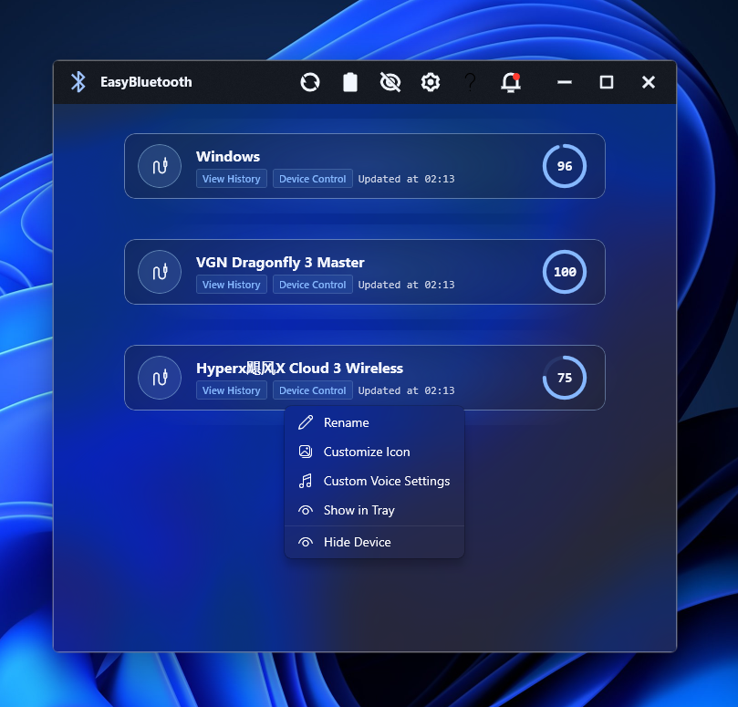
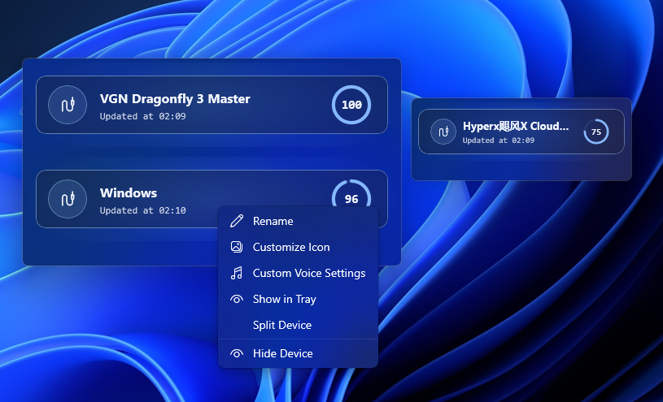
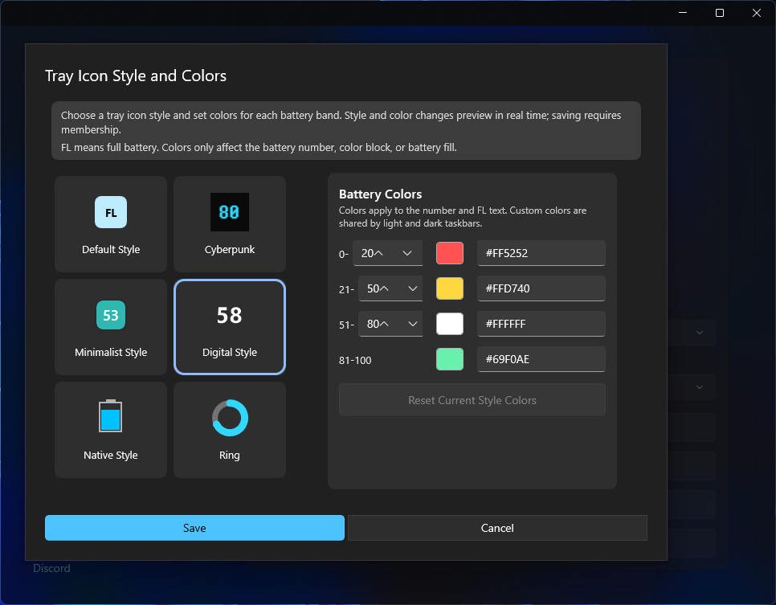

Connect it in Windows
Pair Bluetooth devices in Windows first. For 2.4G devices, plug in the receiver and select the correct device mode.
From first launch to everyday use
Start with device detection, then discover drag-to-reorder, device shortcuts, tray styles, desktop widgets, alerts, history, and game overlays without digging through release notes.
Do this first
Most “device not found” cases are solved by these three steps.
Pair Bluetooth devices in Windows first. For 2.4G devices, plug in the receiver and select the correct device mode.
Open Settings → Plugin Marketplace, find the brand, and enable it. Compatibility still depends on the exact model.
Return to the main window and click Refresh Devices. Once found, EasyBluetooth will continue updating its battery.

Closing the main window does not have to exit the app. EasyBluetooth can keep running in the system tray.
Easy to miss

Hold the left mouse button on a device card, move it up or down, and release. This order also affects features that use the “first visible device.”
Rename, customize the icon, assign a device voice, show it in the tray, hide it, or split/unsplit it while using the widget.
Open View History for battery trends. Device Control appears only for models with a supported control protocol.
Use the crossed-out eye in the title bar to open the hidden list and restore a device.
Keep it on the desktop

Drag the widget header to move it and resize from its edges. Window positions and sizes are saved automatically.
Choose always-on-top, bottom, mouse passthrough, or no background. Top and bottom modes are not hidden by Win + D.
Enable automatic height, edge snapping, and supported theme changes that follow Windows light/dark mode.
Save and use: Pro / Legacy VIPCheck battery at a glance
Automatically show the lowest valid battery among visible devices.
Prefer one device, then fall back to the lowest battery if it is unavailable.
Use the first connected device in your priority order, with a safe fallback.

Open the app, Plugin Marketplace, Data API, Refresh Devices, widget controls, OSD, entitlement refresh, Settings, Help, About, or Exit.
“Show in Tray” on a device is the quick fixed-device shortcut. Use Tray Display Settings for full fixed and priority rules.
Fit your routine
Choose a threshold and use Toast notifications, system sound, or custom voice alerts. Advanced voice settings can vary by device and threshold.
Preview a premium theme before saving it. You can also change the UI font, device icons, and tray appearance.
Review recent trends. Advanced analysis adds custom ranges, average drain, and estimated battery life.
Configure launch at startup, start minimized, Windows battery entries, updates, and language.
Export and import common settings. Accounts, tokens, logs, and battery history are deliberately excluded.
Open logs, enable verbose logging when requested, send feedback, or visit Discord. These tools are optional for normal use.
Set up only when needed
Expose a local standard JSON snapshot for Rainmeter, Wallpaper Engine, local hardware displays, and other integrations.
Show battery data in games, SensorPanel, or Win + G. Free exports the first visible device; advanced entitlement exports all visible devices.
USB/Bluetooth capture tools collect evidence for unsupported devices. You do not need them for normal monitoring.
All-device integrations require Pro / Legacy VIP. Restricted 2.4G groups additionally require Pro / Legacy 2.4G Add-on.
Know what your purchase is called
EasyBluetooth Pro is the current Store product. One purchase unlocks both VIP-class features and the 2.4G Add-on feature set.
Older VIP and 2.4G Add-on purchases remain valid and continue to appear under their real product names. They are not renamed to Pro.
If you own only one older product, the purchase screen may offer the matching legacy top-up for the missing feature set.
| Store ownership | Displayed as | Unlocked feature sets |
|---|---|---|
| EasyBluetooth Pro | EasyBluetooth Pro | VIP + 2.4G feature sets |
| Legacy VIP only | Legacy VIP | VIP feature set; legacy 2.4G top-up may be available |
| Legacy 2.4G only | Legacy 2.4G Add-on | 2.4G feature set; legacy VIP top-up may be available |
| Both legacy products | Legacy VIP + Legacy 2.4G Add-on | Both existing feature sets; ownership is still not labeled Pro |
That is expected for early Store purchases. EasyBluetooth preserves the real source of your license, so your older products keep their names while their features remain available.
If something still looks wrong